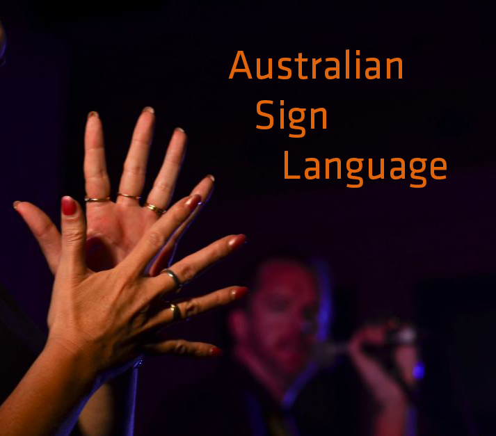

Presents
Introduction to Auslan
&
Deaf Culture
by
Stephanie Soya
Wednesday 14th September 2016
12:15 - 1:00pm
Training Room 3
Introduction to Auslan & Deaf Culture

Have you ever observed in fascination people using sign language?
Or maybe you've struggled to communicate with a Deaf person?
Just how does this amazing language work and how can you learn it?
This presentation will give you an insight into unique cultural aspects of the Deaf community and open your mind to the workings of a purely visual language.
So come along and try your hand at Auslan!
Stephanie Soya